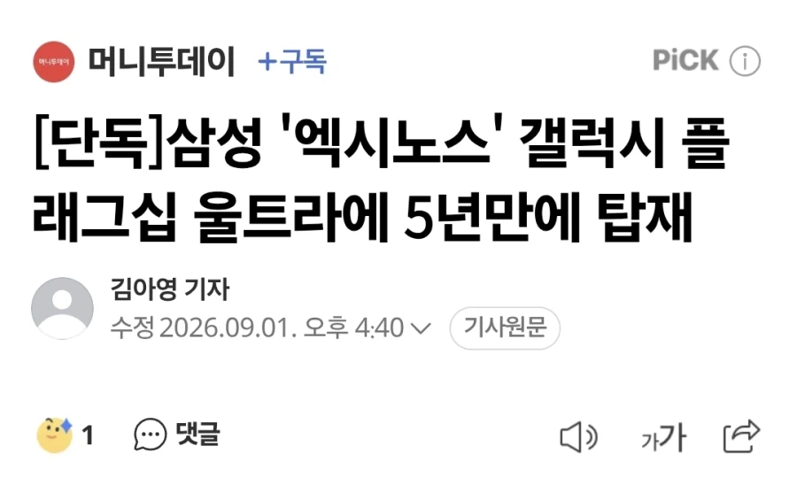

그냥 반응 보는거겠지?

그냥 반응 보는거겠지?
나도 ㅋㅋ
엑시노스는 노력 좀 더 해야지 자꾸 간보지 마라
23U- GOS이슈 없애고 카메라 100배줌 업글, 히트파이프 개선
24U - 티타늄 바디 넣어줌, 엣지패널 드디어 사라짐, 저반사 코팅 도입
25U - 티타늄 삭제, 울트라 모서리 라운드로 바뀜, S펜 블루투스 삭제
26U - 카메라 센서 재탕 계속하는중, 시리즈 중 얘만 스냅드래곤, 프라이버시 패널 넣었는데 전작보다 해상도이슈 + 디스플레이 이슈 늘어남
27U - 스냅드래곤마저 뺀다고?
s23u 사전예약때 사서 지금까지 참고 있는데 대체 언제까지 존버해야되는거야 ㅅㅂ
26은 발열때문인듯? 역시 갓갓 25
25울 티타늄아님?
그리고 지금까지 U은 모두 스냅이기도 해
s25u 티타늄으로 아는데 뭐지
25u 티타늄 맞음 그때까지는 애플이 티타늄을 사용했거든
스냅드래곤 1개당 300달러임 ㅋㅋㅋ
엑시발련아 나가!!!!
지들끼리 댓글 몇 개 싸냐ㅋㅋㅋ 갤에 처박혀있지
논란일자 장난
S25울라리야 좀 웃자 하하하하
엑시는 골든타임 한참 전에 놓쳤음
설령 기적적으로 M1이나 스냅 엘리트급의 명기가 뽑혔다 해도
한 2-3세대 내리 증명하지 않으면 사람들 아무도 안믿을거임
그렇다고 안만들면 스냅 가격 졸라 올라서 폰 가격만 천장 뚫음, 몇세대 손해보더라도 삼성이 엑시 포기하지 않길 바래야함
성능이 거의 한 세대 차이 아닌가 자신있나
보드 발주 했단다 오피셜 같음
엄...에반데
단가땜에 그러겟지모
동결이나 쪼금오르고 엑시쓰냐 와랄라오르고 스냅쓰냐...
난 이제 고장안나고 잘되는 폰을 왜 바꿔야 하는지 모르겠어
돈 좀 써서 아예 새 아키텍쳐로 갈아엎지
스냅 엑시노스 비교 지겹지도 않나
얘들 왜 혼자 이렇게 뒤쳐지는지 이해가 전혀안가
아니 초창기 애플 아이폰에 칩셋도 담당하던 실력이
왜 갑자기 박살난겨
24울라리 30년까지 써야겟다 미안